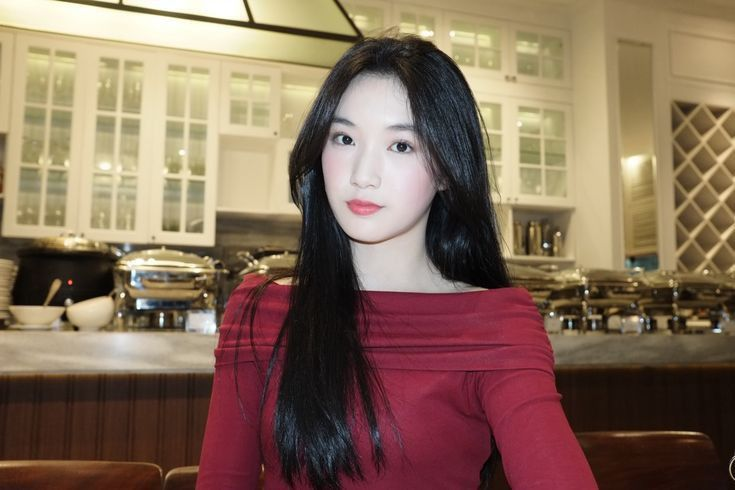

-Kenali lebih dekat Delynn JKT48-
Lahir 1 September 2007, Delynn menyeimbangkan disiplin dance dan vokal. Geraknya bersih, senyumnya ramah, dan kehadirannya sering jadi mood booster.
Jikoshoukainya "Nyemangatin dan nganenin, siapa yang kamu pikirin? Delynn. Pyong Pyong aku Delynn"
